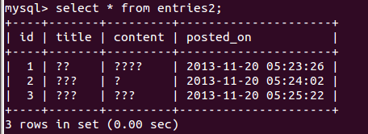

让MySQL支持中文
这两天在学习webpy，把webpy的一个blog例子扒下来学习一下，默认创建的table当存入中文的时候是乱码，研究了一下这个问题。
1，创建table的时候就使用utf8编码
举个例子：

1 create table entries2 ( 2 id int auto_increment, 3 title text, 4 content text, 5 posted_on datetime, 6 primary key (id) 7 ) character set = utf8;

在每次创建表的时候都在最后加上
character set = utf8
就可以很好的支持中文。
2，修改已经有的table的编码
当使用默认编码创建了一个table的时候，是不能支持中文的，这时候使用如下语句对table_name进行修改：
alter table table_name convert to character set utf8;
此后再往这个table插入中文的时候，就可以正常存储和读取了，但不知道为什么之前的乱码还是不能纠正，只能新插入的数据没有问题。
[注意] 我google了一下，有些地方说这个命令也行，但是我测试以后并不行
alter table table_name charset=utf8; #这个语句并没有让table_name支持中文
修改table编码前：

修改为utf8后并插入一行数据：

可以看到已支持中文，但之前的3行还是没有改变。
3，修改table中一个column的编码
这个我目前还没发现需要在实际中使用到，但是测试了很多次，语句如下：
alter table entries modify title mediumtext character set utf8;
其中entries是我的table名，title是我要修改的column字段，mediumtext是title的类型。
即使是修改table某个字段的编码，也没有做到让之前的乱码变成中文。
4，如何查看一个database，一个table的编码
查看database的编码，假如database名字为webpy：
show create database webpy;
查看一个table的编码，假如table名为entries2:
show create table entries2;
效果如下，其实表中每个字段编码都是utf8，表的default的utf8的，所以没有单独显示每个字段的。

5，修改mysql的配置文件，让mysql默认编码为utf8
在我的ubuntu机器上，mysql的配置目录为/etc/mysql
而我们mysql使用的配置文件为
/etc/mysql/my.cnf
我们可以直接加在my.cnf中，当然为了方便移植可复用，也可以如下写在独立的配置文件中。
在my.cnf最后又include了 conf.d/ 下面所有的*.cnf文件，所以我们就在conf.d/下面加上一个我们自己的配置文件wy_sql.cnf
添加如下两行
[mysqld]character-set-server=utf8
再创建表的时候默认编码就是utf8了。
6, 显示的问题
上面改了服务器的字符编码,但是如果不改client的,在终端上显示的还是???
还需要在配置文件中加上
[client] default-character-set=utf8
通过
show variables like '%char%'
可以查看
和编码 "character" , 有关的变量

Variable_name | Value |
+--------------------------+----------------------------+
| character_set_client | utf8 |
| character_set_connection | utf8 |
| character_set_database | latin1 |
| character_set_filesystem | binary |
| character_set_results | utf8 |
| character_set_server | latin1 |
| character_set_system | utf8 |
| character_sets_dir | /usr/share/mysql/charsets/ |
7, 直接在mysql中使用 set 设置 变量
上面我们用show 查看了一些变量的值
那么可以直接用set来设置,但是这是临时的,下次启动后还是以配置文件的为准
set character_set_result = utf8;

评论
#1楼 2013-11-20 15:10 简单·爱
#2楼[楼主] 2013-11-20 15:22 真实的活
“-”对unix命令行，确实是个特殊的东西。。
#3楼 2013-11-20 15:53 -Stephen
#4楼 2013-11-20 16:27 夜の魔王
#5楼 2013-11-20 16:39 里沃特
弱弱的问一下，头像上的腿是开的？
#6楼 2013-11-20 16:56 王大湿

#7楼 2013-11-20 16:57 王大湿
#8楼 2013-11-20 17:18 夜の魔王
你不是楼主啊，怎么知道的？难道。。。。
#9楼 2013-11-20 17:21 王大湿
谷歌识图
#10楼 2013-11-20 18:29 冲杀
#11楼[楼主] 2013-11-20 20:24 真实的活
谢谢，学习了，我一般就用linux自带的包管理器就安装了，我回头探究关于安装


导航

公告
统计
- 随笔 - 50
- 文章 - 0
- 评论 - 73
- 引用 - 0
搜索
随笔分类
随笔档案
- 2014年6月 (2)
- 2014年5月 (1)
- 2014年3月 (1)
- 2014年2月 (1)
- 2014年1月 (2)
- 2013年12月 (2)
- 2013年11月 (2)
- 2013年10月 (1)
- 2013年9月 (3)
- 2013年8月 (5)
- 2013年7月 (2)
- 2013年4月 (1)
- 2013年1月 (1)
- 2012年12月 (1)
- 2012年11月 (1)
- 2012年10月 (1)
- 2012年9月 (1)
- 2012年8月 (3)
- 2012年7月 (4)
- 2012年6月 (3)
- 2012年5月 (4)
- 2012年4月 (2)
- 2012年3月 (3)
- 2012年2月 (2)
- 2012年1月 (1)